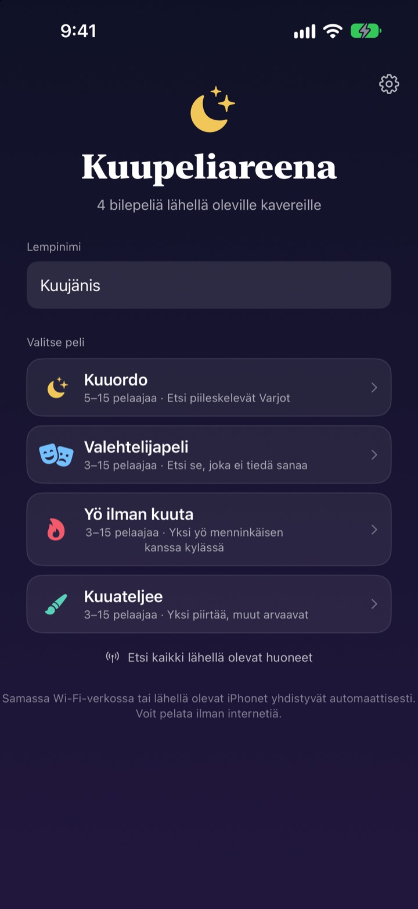
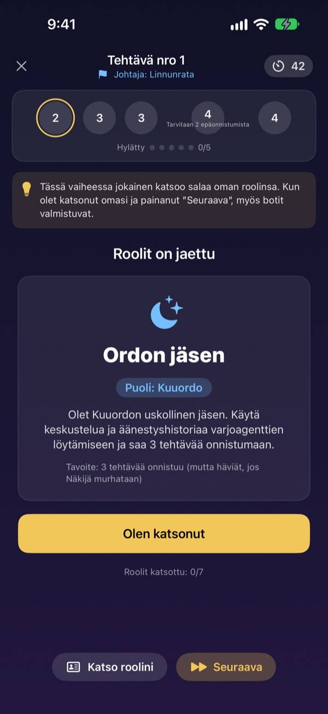
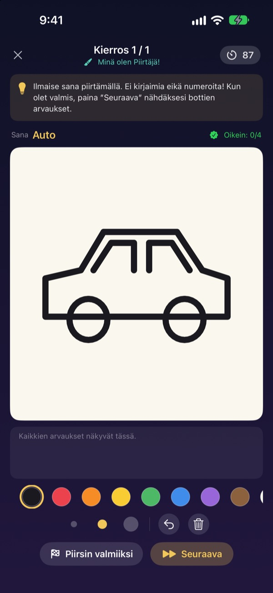
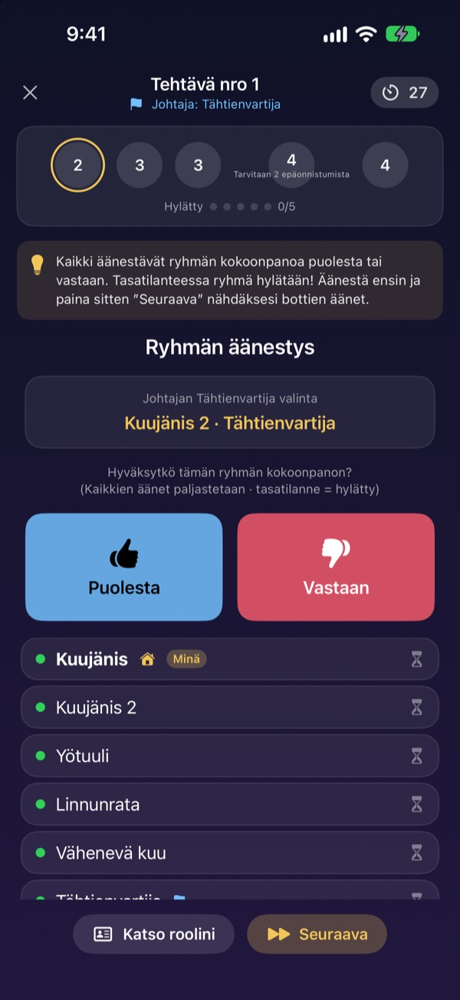

Onko kaikki paikalla?
iPhonet esiin.
Yksi luo huoneen, ja kaikki lähellä olevat liittyvät sekunneissa. Roolit ja salaiset sanat näkyvät vain omalla näytöllä: ei kortteja, eikä kenenkään tarvitse jäädä pelin ulkopuolelle vetämään.
Kaikki pelit ovat maksuttomia. Ei tiliä, ei nettiä.

Pelaa kierros Valehtelijapeliä
Kuvittele pöydälle viisi iPhonea ja napauta niitä yksi kerrallaan kurkataksesi. Vain yksi pelaaja ei tiedä sanaa. Voitte myös kierrättää näyttöä kaverien kesken.
Kaikki ovat paikalla, mutta mitä pelataan?
Peli-ilta, mökkiviikonloppu, joulu suvun kanssa. Salaisten roolien peleissä jonkun on jäätävä sivuun vetämään peliä, eivätkä taitellut laput pysy koskaan täysin salassa. Mökillä, jossa wifi on heikko, nettipelitkään eivät toimi. Kuupeliareenassa iPhonet hoitavat pelinjohdon, roolien jaon ja yhteydet.
Roolisi näkyy vain sinun näytölläsi
Kun peli alkaa, jokainen iPhone saa oman roolinsa tai sanansa. Ei korttien jakamista, ei ”kaikki sulkevat silmänsä”.
Äänestyksessä näkyy vain, kuka on jo äänestänyt. Kuka äänesti ketäkin, pysyy salassa paljastukseen asti.

Neljä peliä joka porukalle
Valehtelijapelissä voittaa paras puhuja, Kuuordossa jahtaatte Varjoja tehtävien ja äänestysten avulla, Yössä ilman kuuta etsitte menninkäisen yhden yön aikana, ja Kuuateljeessa yksi piirtää ja muut arvaavat.
Kuuordo 5 pelaajasta, muut 3:sta, kaikki enintään 15:lle.

Uusi peli? Opittu muutamassa minuutissa
Jokaisessa pelissä on Näin pelaat -tila, jossa pelaat kierroksen botteja vastaan vaihe vaiheelta. Lue vinkki ylhäältä ja napauta Seuraava.
Jos sovellus sulkeutuu tai yhteys katkeaa, napauta Jatka-painiketta aloitusnäytöllä, niin pääset takaisin samaan kierrokseen.

Aloita kolmessa vaiheessa
- 1
Lempinimi ja peli
Kaikki avaavat sovelluksen, kirjoittavat lempinimen ja valitsevat pelin.
- 2
Luo huone tai liity
Yksi luo huoneen, muut löytävät sen kohdasta Etsi lähellä olevia huoneita.
- 3
Isäntä aloittaa
Kun kaikki ovat sisällä, isäntä napauttaa Aloita peli. Sovellus hoitaa loput.
Neljä peliä
- Valehtelijapeli · 3–15 pelaajaa
- Kaikki saavat saman sanan paitsi yksi. Vuorotellen sanaa kuvaillaan, ja sitten äänestetään valehtelijasta. Jos kiinni jäänyt valehtelija arvaa sanan, hän voittaa silti.
- Kuuordo · 5–15 pelaajaa
- Paljastakaa Ordoon kätkeytyneet Varjot. Johtaja valitsee tehtäväryhmän, kaikki äänestävät puolesta tai vastaan, ja ryhmä pelaa salaa onnistumisen tai epäonnistumisen. Se puoli, joka ensin saa kolme tehtävää, voittaa.
- Yö ilman kuuta · 3–15 pelaajaa
- Yksi yö, ja kylään on piiloutunut menninkäinen. Yöllä Šamaani, Yövaras ja Veijari toimivat salaa. Aamunkoitteessa keskustellaan, ja menninkäisen löytämiseen on vain yksi äänestys.
- Kuuateljee · 3–15 pelaajaa
- Yksi piirtää sanan ja muut arvaavat chatissa. Mitä nopeammin arvaat oikein, sitä enemmän pisteitä, ja piirtäjä saa pisteitä jokaisesta oikeasta vastauksesta.
Jokaista peliä voi ensin kokeilla yksin bottien kanssa Näin pelaat -tilassa.
Usein kysyttyä
En näe huonetta.
Tarkista, että isäntä ja pelaajat ovat samassa wifissä tai lähellä toisiaan. Kuupeliareenan täytyy olla päällä kohdassa Asetukset ▸ Tietosuoja ja turvallisuus ▸ Paikallisverkko, jotta se löytää lähellä olevat laitteet. Kun sekä wifi että Bluetooth ovat päällä, yhteys on vakain.
Pitääkö paikallisverkon käyttö sallia?
Kyllä, sen avulla sovellus löytää lähellä olevat iPhonet ja yhdistää niihin. Jos napautit Älä salli, laita se takaisin päälle kohdassa Asetukset ▸ Tietosuoja ja turvallisuus ▸ Paikallisverkko.
Yhteys katkesi kesken pelin.
Avaa sovellus uudelleen ja napauta aloitusnäytön Jatka-painiketta, niin palaat samaan huoneeseen ja kierrokseen. Rooli ja pisteet säilyvät. Jos yhdistäminen kestää kauan, liity uudelleen huonelistasta.
Joku ei vastaa ja peli on jumissa.
Isäntä voi milloin tahansa poistaa pelaajan, joka ei vastaa, ja peli laskee tilanteen uudelleen jäljellä olevilla ja jatkuu. GM-isäntätilassa jumiin jääneen vaiheen voi myös ohittaa.
Montako pelaajaa tarvitaan?
Kuuordo vaatii 5. Valehtelijapeli, Yö ilman kuuta ja Kuuateljee alkavat 3:sta. Kaikkiin mahtuu 15. Liian vähän porukkaa? Opetelkaa säännöt botteja vastaan Näin pelaat -tilassa.
Tarvitaanko nettiä tai tiliä?
Ei. Ei rekisteröitymistä, kirjautumista eikä nettiä. Lähellä olevat iPhonet yhdistyvät suoraan, eikä pelitietoja koskaan lähetetä palvelimelle.
Voinko kokeilla peliä ensin yksin?
Voit. Valitse peli ja sitten Näin pelaat (harjoittelu botteja vastaan). Botit tulevat huoneeseen, ja pelaat kokonaisen kierroksen vaihe vaiheelta.
Miten ilmoitan virheestä tai lähetän idean?
Suoraan sovelluksesta kohdasta Asetukset (ratas) ▸ Tuki tai sähköpostilla alla olevaan osoitteeseen. Vastaamme mahdollisimman pian.
Virheet, ideat ja muut asiat: kirjoita osoitteeseen mizzking75@gmail.com.